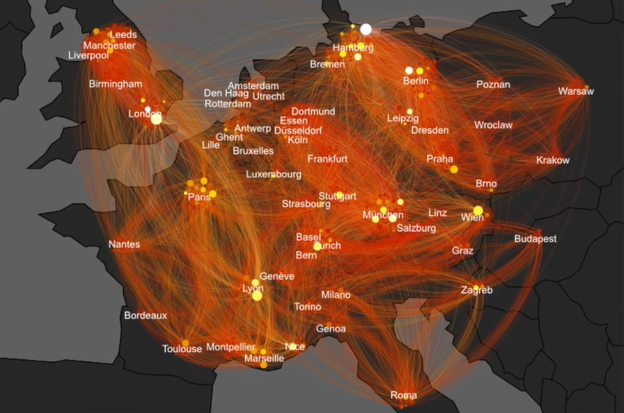

Here we are taking a data set to generate a graph of how different nodes are connected with each other in the network. This data set contains data in 2 forms nodes and edges, if 2 people (nodes) have a connection then an edge (link) is formed joining both the nodes.

The above map is created using Geo Layout of Gephi. It shows routes of aircrafts over the Europian Continent
Refrences :
Gephi Dataset